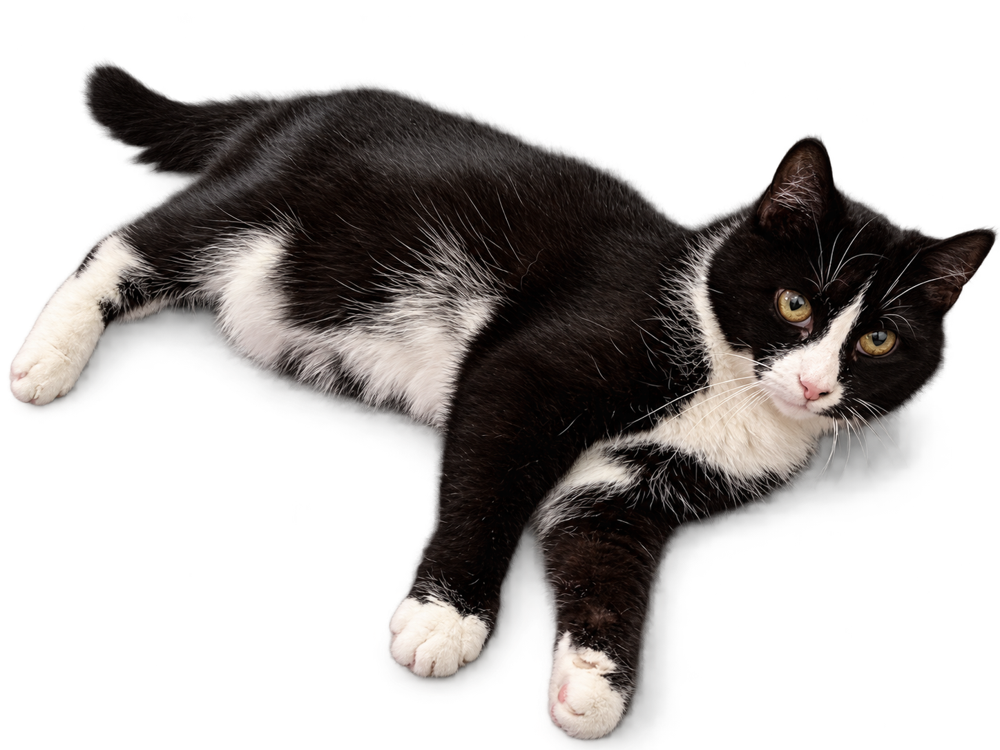
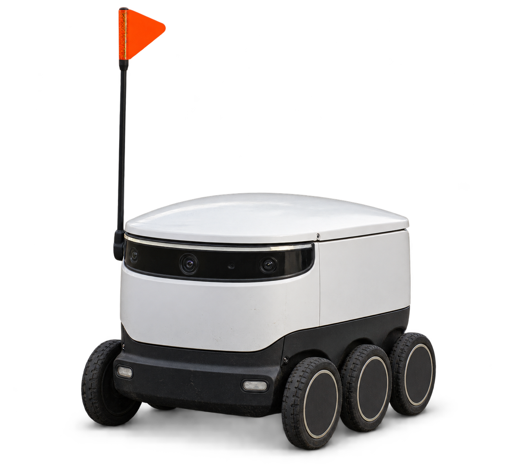
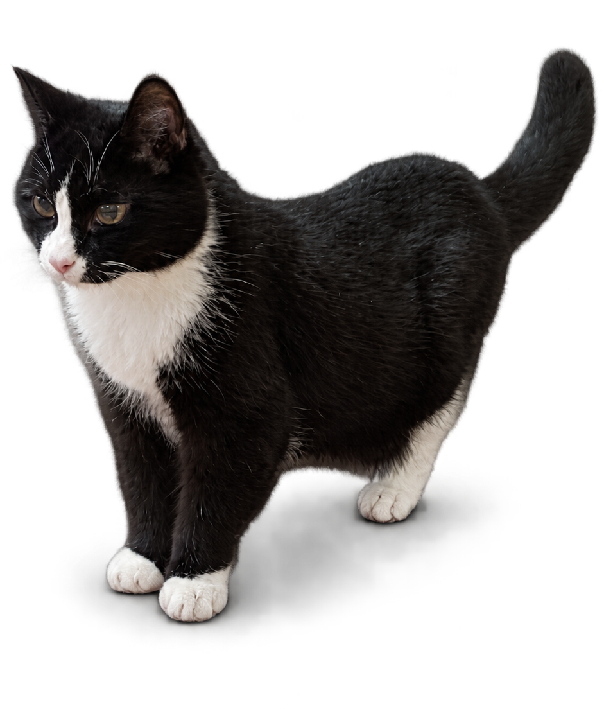
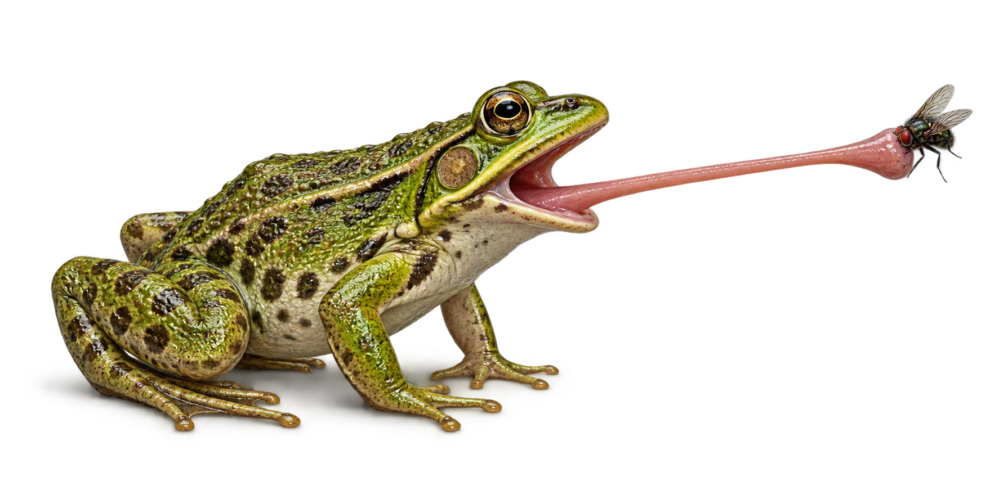

Cognitive Modelling: Introduction to the Concept
LDA-C302 Cognitive Modelling Concepts
Course personnel
in Phonetics Speech scientist,
mathematician
in Cognitive Science Cognitive scientist
in Cognitive Science Cognitive scientist,
philosopher
Course objectives
- Develop a conceptual understanding of cognitive models.
- Analyse model assumptions and relate them to theory and evidence.
- Understand the power and limits of modelling, including simplification and abstraction.
How the course works
- Watch the assigned lecture videos before the next meeting.
- Work through the checkpoint exercises in Moodle.
- Bring questions to the live Q&A sessions.
- Use the supplementary resources and readings to explore topics further.
Meetings and materials
- Mondays, 12:15–13:45.
- 26 October – 7 December 2026.
- Topelia A205, Unioninkatu 38.
- Schedule, videos, exercises and feedback in Moodle.
Course schedule
| Date | Live session | Videos for next time |
|---|---|---|
| 26 Oct | Lecture: Introduction | Symbolic Modelling Reinforcement Learning |
| 2 Nov | Q&A: Symbolic Modelling and Reinforcement Learning | Bayesian Modelling Information Theory |
| 9 Nov | Q&A: Bayesian Modelling and Information Theory | Dynamical Systems I Dynamical Systems II |
| 16 Nov | Q&A: Dynamical Systems I and II | Control Theory Predictive Processing |
| 23 Nov | Q&A: Control Theory and Predictive Processing | Neural Networks I Alternative Neural Network Architectures |
| 30 Nov | Q&A: Neural Networks I and Alternative Neural Network Architectures Lecture: Large Language Models | TBD |
| 7 Dec | Q&A: Large Language Models and course recap | — |
Checkpoint exercises
- Practise using the concepts introduced in the videos.
- Use the feedback to revisit ideas that are still unclear.
- Bring difficult questions to the Q&A sessions.
- Submission instructions and deadlines will be provided in Moodle.
Final exam
- The final exam takes place in Examinarium.
- The checkpoint material provides the basis for exam preparation.
- Exam dates and assessment instructions will be announced in Moodle.
Questions about the course?
Cognitive Modelling: What, Why, (How)?
What is Cognitive Modelling?
What is Cognitive?
What entities aremakes something Cognitive?
What entities are Cognitive?
What entities are Cognitive?
What entities are Cognitive?

What entities are Cognitive?

What entities are Cognitive?
What entities are Cognitive?
What entities are Cognitive?
Ones that exhibit
Intelligent Behavior?
What is Intelligent Behavior?
What is Intelligent Behavior?
ADAPTIVE GOAL-ORIENTED behavior in COMPLEX, PARTIALLY PREDICTABLE environments.
INTELLIGENCE AS AN EMOTIONAL CONCEPT
“The extent to which we regard something as behaving in an intelligent manner is determined as much by our own state of mind and training as by the properties of the object under consideration.”
A. M. Turing (1948)
Intelligent Machinery
What is Cognitive Modelling?
What is Modelling?
“All models are wrong, but some are useful.”

A model simplifies for a purpose
- A cat has countless properties.
- Pick properties we can use and understand.
A model simplifies for a purpose
- A cat has countless properties.
- Pick properties we can use and understand.
- What do we need to observe her from another angle?
Loading 3D model…
A model simplifies for a purpose
- A cat has countless properties.
- Pick properties we can use and understand.
- What do we need to observe her from another angle?
- We can model her as a textured 3D mesh.
A model simplifies for a purpose
- How much bronze do we need for a statue of Pyllervö?
- We need to know her volume.
- We could dip her into a bathtub, but she wouldn't like it.
A model simplifies for a purpose
- How much bronze do we need for a statue of Pyllervö?
- We need to know her volume.
- We could dip her into a bathtub, but she wouldn't like it.
- Assume a spherical cat...
r ≈ 9.3 cm
V = (4/3)πr3 ≈ 3.4 litres
A model simplifies for a purpose
- How big a box do we need for 27 Pyllervös?
A model simplifies for a purpose
- How big a box do we need for 27 Pyllervös?
- Assume a cubic cat...
V ≈ 3.4 litres = 3400 cm3
a = ∛V ≈ 15 cm
A model simplifies for a purpose
- How big a box do we need for 27 Pyllervös?
- Assume a cubic cat...
V ≈ 3.4 litres = 3400 cm3
a = ∛V ≈ 15 cm - Stack them up 3 × 3 × 3.
- A box about 45 cm × 45 cm × 45 cm.
What is Cognitive Modelling?
What is Cognitive Modelling?
- The perception-action loop.
- Model information processing that turns perception into action.
- “The rules of the behavior”
Cognition in fly-catching

- A moving image falls on the retina.
- Detect a small, dark, convex object.
- Use its location to aim and trigger a tongue strike.
The cognition of a thermostat
- Goal: keep the temperature at the setpoint T0.
- Adaptive behavior: adjust heating power as the measured temperature T changes.
- Partially predictable environment: weather changes, doors open.
INTELLIGENCE AS AN EMOTIONAL CONCEPT
“If we are able to explain and predict [something's] behaviour or if there seems to be little underlying plan, we have little temptation to imagine intelligence. With the same object therefore it is possible that one man would consider it as intelligent and another would not; the second man would have found out the rules of its behaviour.”
A. M. Turing (1948)
Intelligent Machinery
For next time
- Watch Symbolic Modelling.
- Watch Reinforcement Learning.
- Complete the checkpoint exercises in Moodle.
- Q&A: 2 November, 12:15–13:45.